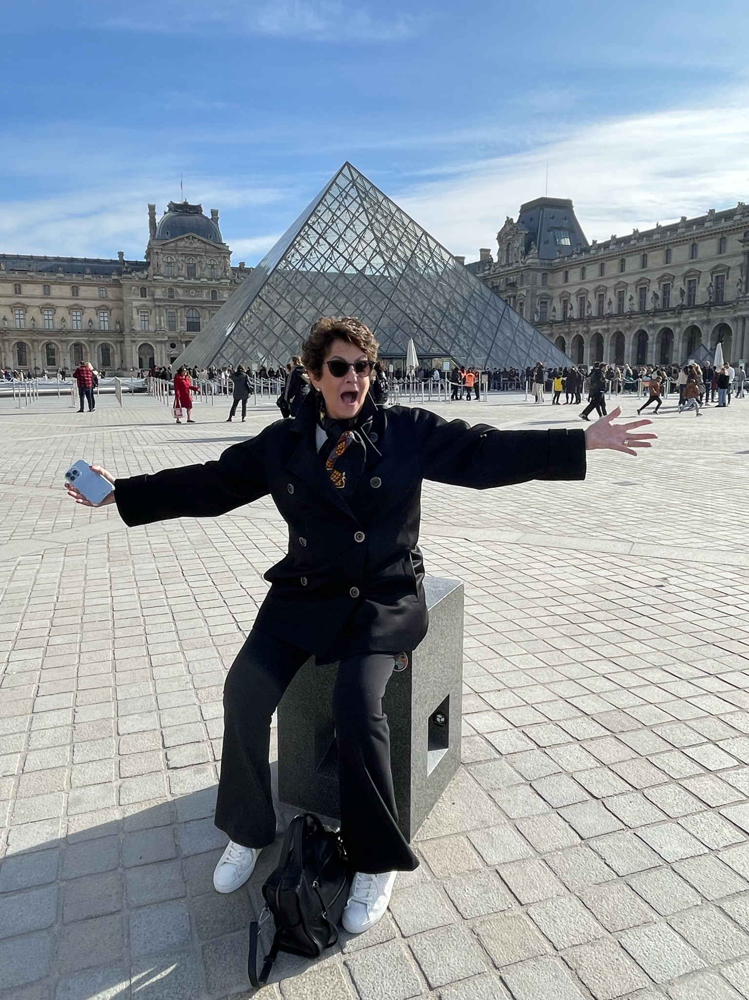
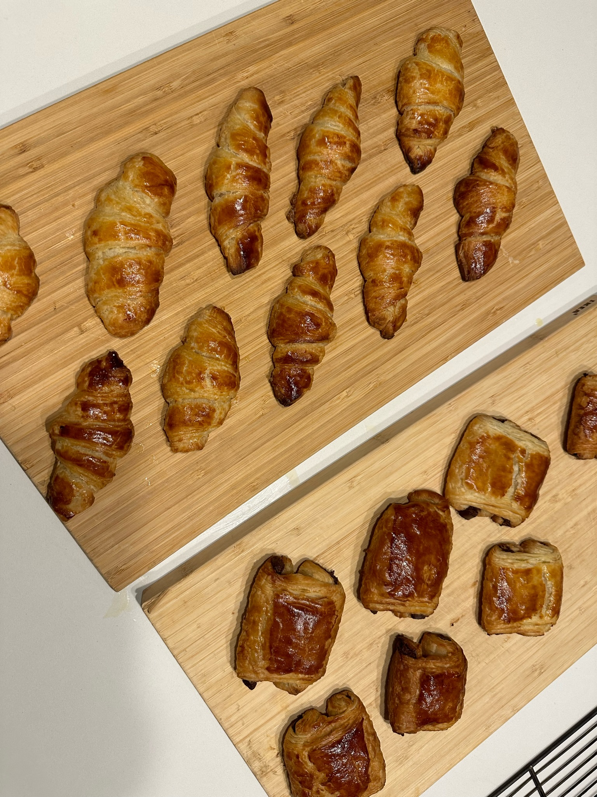
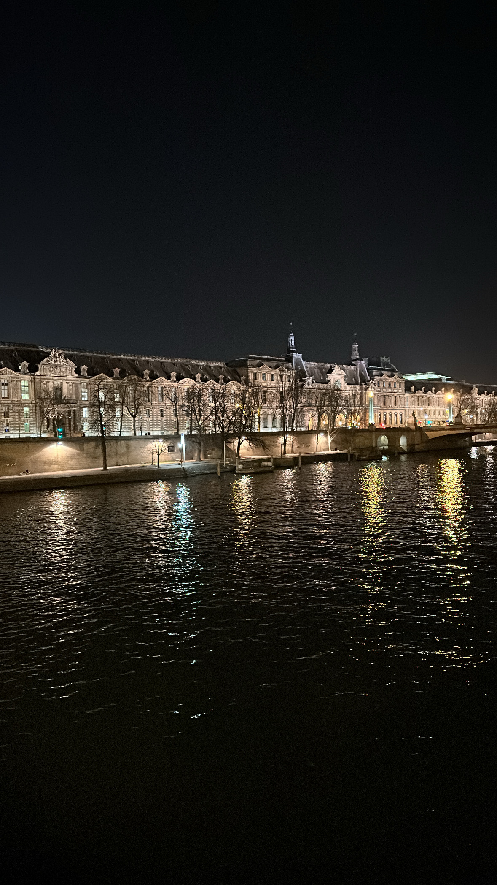
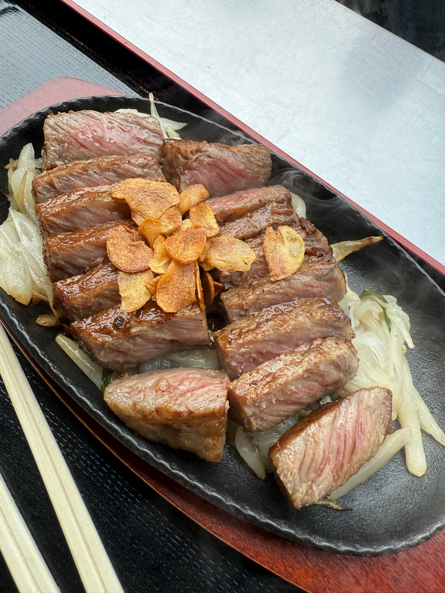
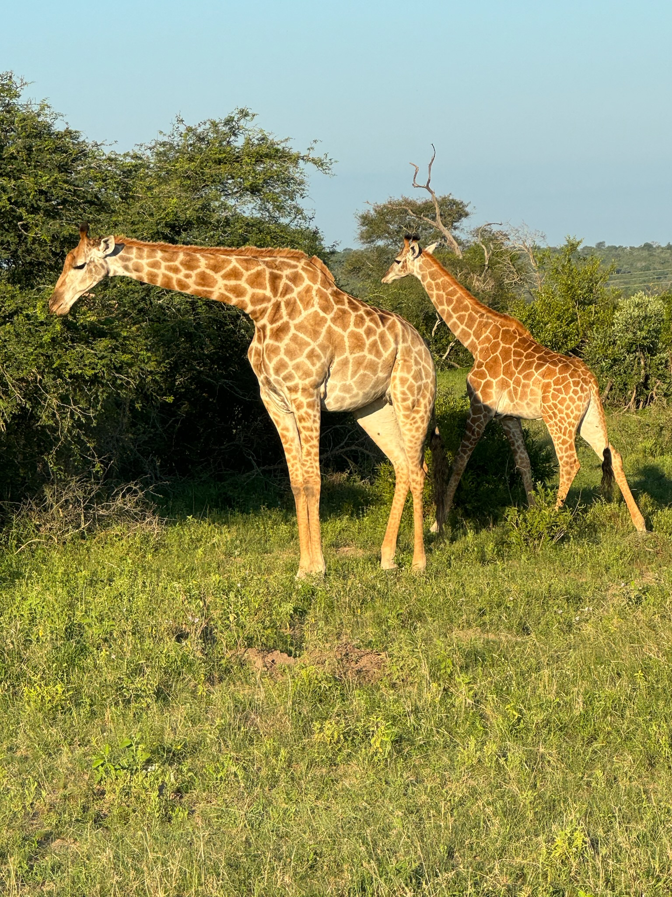
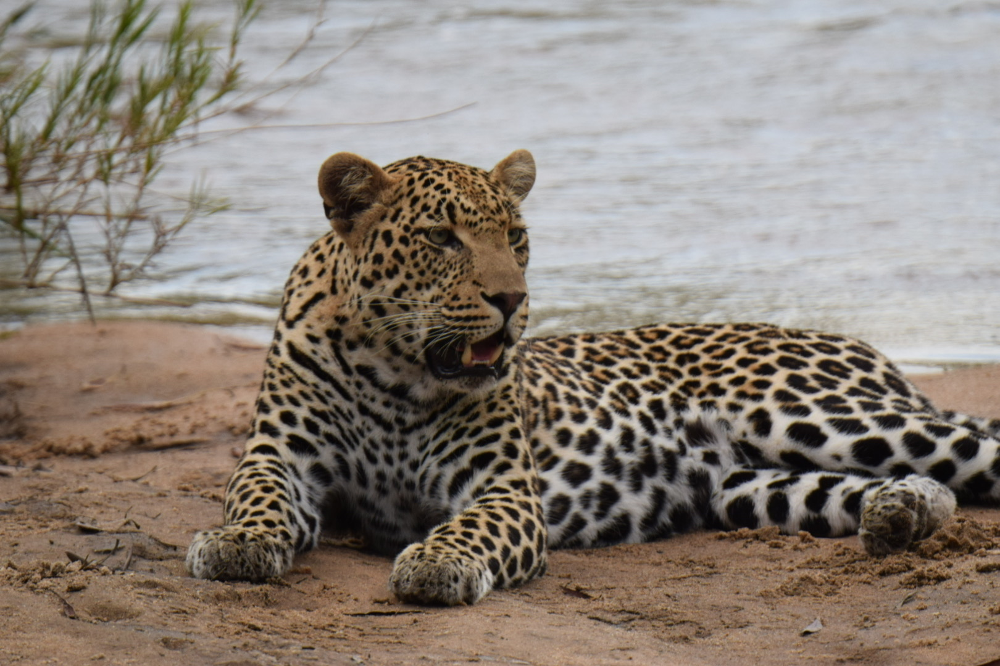
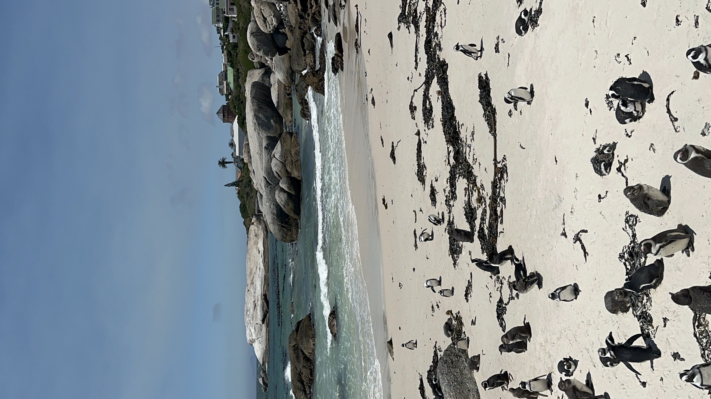
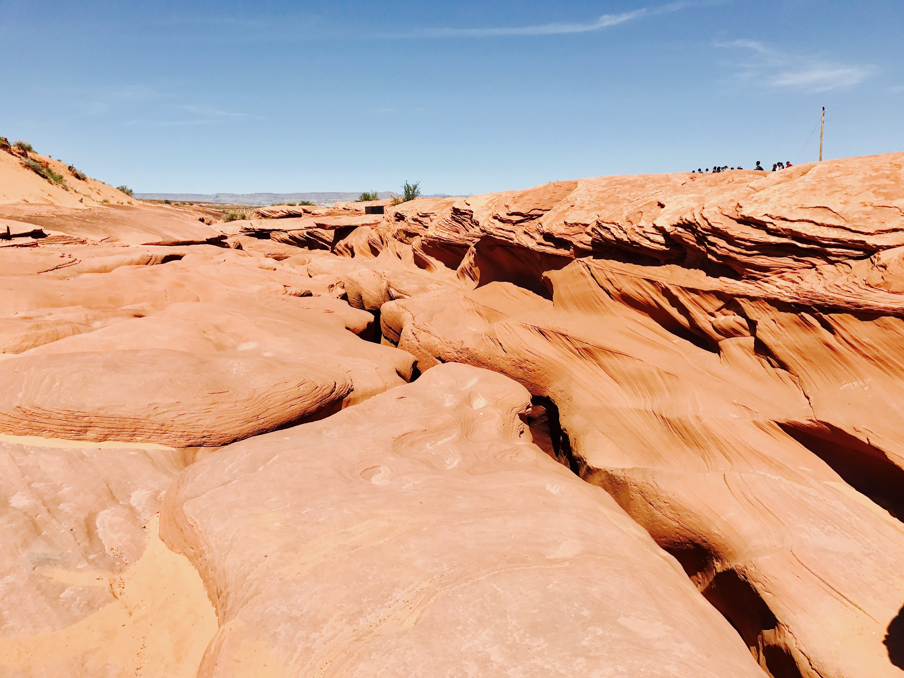
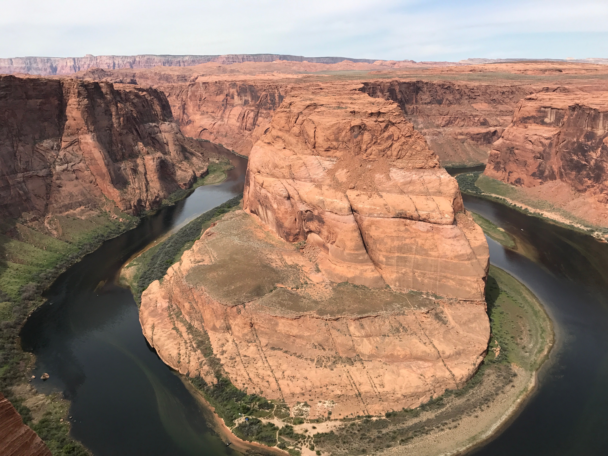

Above is a picture of the Louvre, a famous museum, located in Paris, France

Above is a picture of croissants I made in a cooking class in Paris, France.

Above is a picture of the beautiful architecture in Paris, France. All the buildings are gorgeous with their own unique design.

Above is a picture of A5 Wagyu that we got in the Tsukiji Fish Market, 10/10.

Above is a picture of the Bamboo Forest, located in Kyoto, which was beautiful. We took a rickshaw ride, which was more private than walking. Truly gorgeous.

Above is a picture of Ushimi Inari Taisha, which is located in Kyoto. A beautiful series of Shrines lined up in a row to create a tunnel-like effect.

Above are two stunning giraffes eating in Kruger National Park.

Above is a beautiful cheetah relaxing by the water in Kruger National Park.

Above is a famous site in Cape Town where many individuals gather to see a beautiful site of penguins.

Above is a picture of Upper Antelope Canyon. On the Travel Tips & Lessons Learned page under the Out West Trip (Utah, Arizona, & Vegas) header, you are able to see what the inside of this canyon really looks like.

Above is a picture of Horseshoe Bend, a well-known national park located in Arizona.